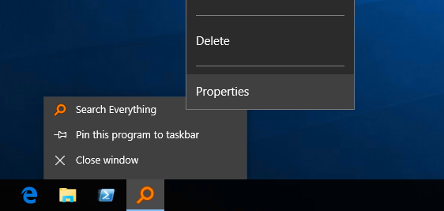
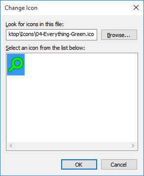
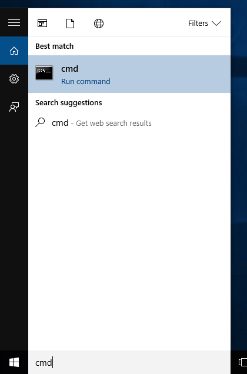
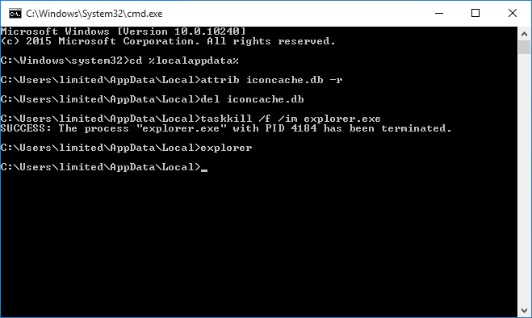

Everything can be customized through the Everything.ini, registry and Everything options.
This guide will help you customize Everything.
To customize the Everything search window caption, HTTP server title and/or taskbar notification title:
Exit Everything
Open your Everything.ini file.
Change the following lines:
window_title_format=$s?{$s - }$t$i?{ ($i)}
http_title_format=$s?{$s - }$t
taskbar_notification_title_format=$t$i?{ ($i)}
Set a new format:
| Variable | Description |
|---|---|
$s | Current search |
$t | Everything (localized) |
$i | Instance name |
Use the following syntax to optionally display text:
| Syntax | Description |
|---|---|
$x?{text} | Display text if $x is not empty. |
Save changes and close the Everything.ini.
Restart Everything.
Example formats:
| Format | Search | Title |
|---|---|---|
| $s?{$s - }My Search | apples | apples - My Search |
| $s?{$s - }My Search | My Search |
Note: Changing the window_title_format will also affect the title on the taskbar button.
To change the Everything icon:
Copy your custom icon file to:
%APPDATA%\Everything\Everything.ico
If Store settings and data in %APPDATA%\Everything is disabled, copy your custom icon file to Everything.ico in the same location as your Everything.exe.
Exit Everything (Right click the Everything system tray icon and click Exit)
Restart Everything.
Download the colorful Everything Icon Pack:
To change the Everything Taskbar group icon:
Right click the Everything taskbar button.
Hold down the Shift key and right click Search Everything.
Click Properties.

Click Change Icon.
Click Browse..., select a new icon and click Open.
Click OK.
Click OK.

Rebuild the icon cache:
From the Start menu, type in the following search and press enter:
cmd

In the command prompt, navigate to local app data folder by typing in the following and pressing enter:
cd %localappdata%
Remove the hidden attribute from the icon cache database by typing the following and pressing enter:
attrib iconcache.db -h
Delete the icon cache database by typing the following and pressing enter:
del iconcache.db
Terminate Windows Explorer by typing the following and pressing enter:
taskkill /f /im explorer.exe
Restart Windows Explorer by typing the following and pressing enter:
explorer

To open paths in an external file manager:
In Everything, from the Tools menu, click Options.
Click the Context Menu tab.
Select Open Path.
Change the command to:
$exec("C:\Program Files $(x86$)\ExternalFileManager\ExternalFileManager.exe" "%1")
Where C:\ExternalFileManager\ExternalFileManager.exe is the location of the external file manager.
Use $$, $%, $( and $) to escape $, %, ( and ).
Check your external file manager help for any required command line parameters.
Click OK.
To use a custom date format in Everything:
Exit Everything.
Open your Everything.ini.
Change the following line:
date_format=
Date format can be zero or more of the following codes:
| code | Description |
|---|---|
| d | Day of month as digits with no leading zero for single-digit days. |
| dd | Day of month as digits with leading zero for single-digit days. |
| ddd | Day of week as a three-letter abbreviation. The function uses the LOCALE_SABBREVDAYNAME value associated with the specified locale. |
| dddd | Day of week as its full name. The function uses the LOCALE_SDAYNAME value associated with the specified locale. |
| M | Month as digits with no leading zero for single-digit months. |
| MM | Month as digits with leading zero for single-digit months. |
| MMM | Month as a three-letter abbreviation. The function uses the LOCALE_SABBREVMONTHNAME value associated with the specified locale. |
| MMMM | Month as its full name. The function uses the LOCALE_SMONTHNAME value associated with the specified locale. |
| y | Year as last two digits, but with no leading zero for years less than 10. |
| yy | Year as last two digits, but with leading zero for years less than 10. |
| yyyy | Year represented by full four digits. |
| gg | Period/era string. The function uses the CAL_SERASTRING value associated with the specified locale. This element is ignored if the date to be formatted does not have an associated era or period string. |
Save changes to the Everything.ini
Restart Everything.
To use a custom time format in Everything:
Exit Everything.
Open your Everything.ini.
Change the following line:
time_format=
Time format can be zero or more of the following codes:
| Code | Description |
|---|---|
| h | Hours with no leading zero for single-digit hours; 12-hour clock. |
| hh | Hours with leading zero for single-digit hours; 12-hour clock. |
| H | Hours with no leading zero for single-digit hours; 24-hour clock. |
| HH | Hours with leading zero for single-digit hours; 24-hour clock. |
| m | Minutes with no leading zero for single-digit minutes. |
| mm | Minutes with leading zero for single-digit minutes. |
| s | Seconds with no leading zero for single-digit seconds. |
| ss | Seconds with leading zero for single-digit seconds. |
| t | One character time-marker string, such as A or P. |
| tt | Multicharacter time-marker string, such as AM or PM. |
| SSS | Milliseconds with leading zeros, must be the last part of the format. |
Save changes to the Everything.ini
Restart Everything.
To change the translucency see translucent_selection_rectangle_alpha
To change the background color see translucent_selection_rectangle_background_color
To change the border color see translucent_selection_rectangle_border_color
See home
To change the result list font see Fonts and colors
To change the search edit font see search_edit_font and search_edit_font_size
To change the status bar font see status_bar_font and status_bar_font_size
To change the result list header font see header_font and header_font_size
To change the status bar format see statusbar_selected_item_format
See Change the default HTTP files.
See etp_server_welcome_message in the Everything.ini.